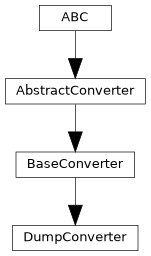

pyTRLCConverter.dump_converter
Converter base class which does nothing (besides printing call names in verbose mode.)
Author: Norbert Schulz (norbert.schulz@newtec.de)
Classes
Simple converter implementation that just dumps all items. |
Module Contents
- class pyTRLCConverter.dump_converter.DumpConverter(args: Any)[source]
Bases:
pyTRLCConverter.base_converter.BaseConverter
Simple converter implementation that just dumps all items.
- convert_record_object_generic(record: pyTRLCConverter.trlc_helper.Record_Object, level: int, translation: dict | None) pyTRLCConverter.ret.Ret[source]
Process the given record object in a generic way.
The handler is called by the base converter if no specific handler is defined for the record type.
- Parameters:
record (Record_Object) – The record object.
level (int) – The record level.
_translation (Optional[dict]) – Translation dictionary for the record object. If None, no translation is applied.
- Returns:
Status
- Return type:
- convert_section(section: str, level: int) pyTRLCConverter.ret.Ret[source]
Process the given section item.
- Parameters:
section (str) – The section name
level (int) – The section indentation level
- Returns:
Status
- Return type:
- enter_file(file_name: str) pyTRLCConverter.ret.Ret[source]
Enter a file.
- Parameters:
file_name (str) – File name
- Returns:
Status
- Return type:
- finish() pyTRLCConverter.ret.Ret[source]
Finish the conversion process.
- Returns:
Status
- Return type:
- static get_description() str[source]
Return converter description.
- Returns:
Converter description
- Return type:
str
- static get_subcommand() str[source]
Return subcommand token for this converter.
- Returns:
Parser subcommand token
- Return type:
str
- leave_file(file_name: str) pyTRLCConverter.ret.Ret[source]
Leave a file.
- Parameters:
file_name (str) – File name
- Returns:
Status
- Return type: